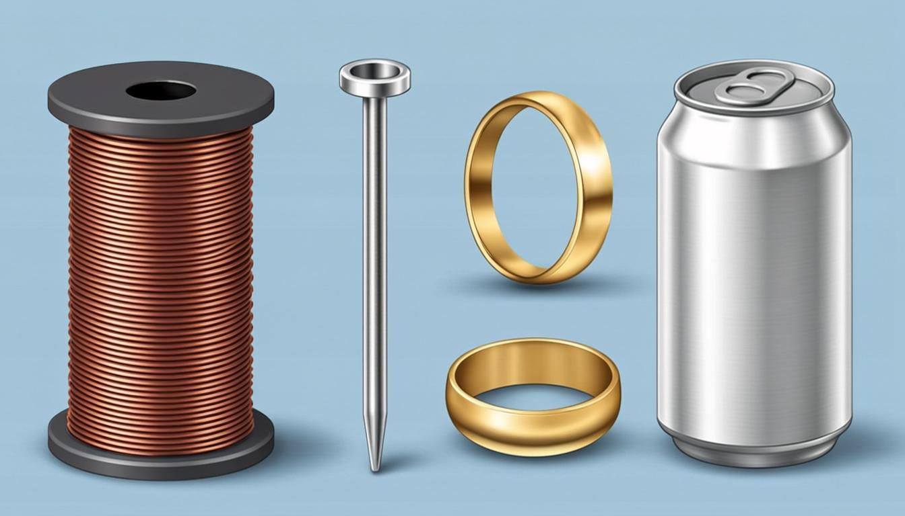
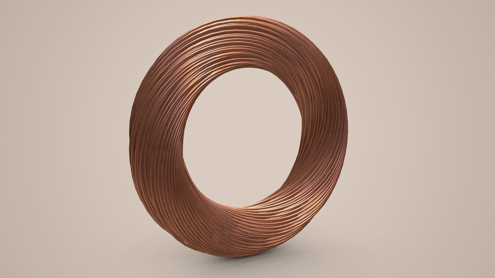
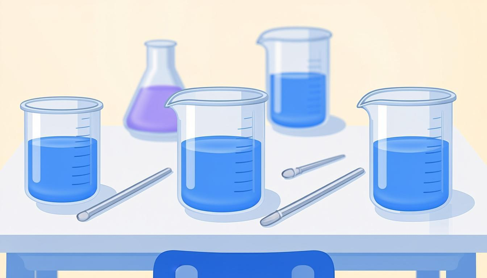
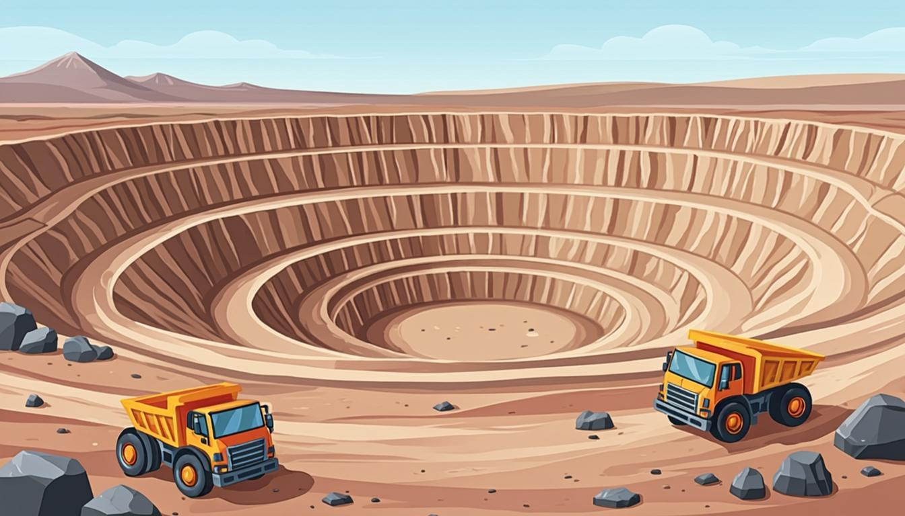

فلزها، واکنشپذیری، گازهای هوا، طبقهبندی عنصرها و بسپارها؛ همراه با آزمایش کلاسی

در این جزوهٔ مصور، فصل اول علوم نهم (مواد و نقش آنها در زندگی) را با تمرکز بر فلزها، واکنشپذیری، گازهای هوا و ترکیبهای صنعتی، طبقهبندی عنصرها و بسپارها گامبهگام میآموزیم؛ همراه با آزمایش کتاب، مثالهای واقعی ایران و کاربرگهای تثبیت یادگیری.
آزمایش کتاب۷ جدول آموزشیتقویم مطالعهپروژهٔ پژوهشی
کتابهای درسی پایه نهم · سال ۱۴۰۵–۱۴۰۶منبع: chap.sch.ir
🎯 اهداف یادگیری
نقش فلزها (مس، آهن، منیزیم، طلا و...) در زندگی و صنعت را توضیح دهید
واکنشپذیری متفاوت فلزها با اکسیژن را مقایسه و رتبهبندی کنید
نقش گازهای هوا (اکسیژن، نیتروژن، ازن) و ترکیبهای مهم (سولفوریک اسید، آمونیاک) را شرح دهید
طبقهبندی عنصرها بر پایهٔ تعداد الکترونهای مدار آخر را کار کنید
بسپارهای طبیعی و مصنوعی را بشناسید و دربارهٔ بازیافت پلاستیک بحث کنید
🧭 پیشنیازها
طبقهبندی عنصرها به فلز و نافلز (علوم هشتم)
مدل اتمی بور و تعداد لایههای الکترونی
مفهوم مادهٔ خالص (عنصر و ترکیب) و مخلوط
فلزها؛ ستون فقرات دنیای مدرن
همهٔ چیزهایی که روزمره استفاده میکنیم — از سیم برق و پل و ساختمان تا زیورآلات و بدنهٔ خودرو — از موادی مانند سنگ، چوب، فلز و شیشه ساخته شدهاند. این مواد خود از یک یا چند ماده تشکیل شدهاند؛ برخی مواد خالص (عنصر یا ترکیب) و بعضی مخلوطاند. از هزاران سال پیش، انسان با کشف فلزها روشهایی برای ساخت ابزار یافت و امروز فلزها نقشی حیاتی در صنعت دارند.
اگر روکش سیم برق را کنار بزنید، فلزی براق و سرخرنگ میبینید: مس. مس از ذوب سنگ معدن آن در دمای بالا به دست میآید؛ یکی از معادن بزرگ در حال بهرهبرداری ایران، معدن مس سرچشمه در استان کرمان است. مس به سه دلیل گرانبهاست: رسانایی الکتریکی زیاد (برای سیمکشی)، مقاومت در برابر خوردگی و قابلیت مفتول شدن (چکشخواری و نرمی). ظروف مسی برای پخت غذا هم قرنهاست در آشپزخانههای ایرانی جا دارد.

کابل مسی؛ رسانایی بالا دلیل اصلی انتخاب مس در صنعت برق است (عکس واقعی)
واکنشپذیری فلزها یکسان نیست
آهن با اکسیژن واکنش میدهد و زنگ میزند؛ مس هم با اکسیژن ترکیب میکند اما بسیار کند و به اکسید مس تبدیل میشود؛ نوار منیزیم روی شعله بهسرعت میسوزد و نور خیرهکنندهای تولید میکند؛ اما طلا برخلاف این سه فلز، با اکسیژن ترکیب نمیشود. پس میتوان فلزها را بر اساس سرعت واکنش با اکسیژن مقایسه و رتبهبندی کرد.
فلز
واکنش با اکسیژن
کاربرد مهم
نکتهٔ کلیدی
منیزیم
بسیار سریع و درخشان
بنگال آتشزا، آلیاژ سبک خودرو
واکنشپذیرترین در آزمایش
آهن
کند و پیوسته (زنگزدگی)
ساختمان، پل، بدنهٔ خودرو
نیازمند محافظت (رنگ، روکش)
مس
خیلی کند (اکسید سبزرنگ)
سیمکشی، ظروف، لوله
رسانایی عالی
طلا
تقریباً هیچ
زیورآلات، قطعات الکترونیکی
پایدارترین؛ گرانبها
✏️ آزمایش کتاب — مقایسهٔ سرعت واکنش
سه بشر آماده میکنیم؛ در هر یک محلول کات کبود (سولفات مس) میریزیم و بهترتیب تیغهٔ آهن، تیغهٔ منیزیم و تیغهٔ روی را در آنها قرار میدهیم. سرعت تغییر رنگ را مقایسه میکنیم.
حل گامبهگام:
تیغهٔ منیزیم سریعترین تغییر رنگ را نشان میدهد؛ یعنی واکنشپذیرتر از آهن و روی است.
ترتیب واکنشپذیری مشاهدهشده: منیزیم > روی > آهن.
پاسخ «فکر کنید» کتاب: در شرایط یکسان، ظروف آهنی زودتر زنگ میزنند؛ چون آهن واکنشپذیرتر از مس است و با اکسیژن هوای مرطوب سریعتر ترکیب میشود.
⚠️ خطای رایج
«زنگزدن» فقط مخصوص آهن نیست، اما واژهٔ زنگ را بیشتر برای اکسید آهن به کار میبریم. مس هم بهمرور اکسید سبزرنگ (همان سبزشدن ظروف مسی) تشکیل میدهد — فقط بسیار کندتر.
نافلزها و ترکیبهای پرمصرف صنعت
اکسیژن؛ گاز تنفسی و مادهٔ اولیهٔ صنعت
هوای پاک مخلوطی گازی و همگن است: نیتروژن، اکسیژن، آرگون، کربن دیاکسید و بخار آب. اکسیژن بهصورت مولکول دو اتمی (O₂) در هوا هست و گونهٔ سهاتمی آن، اوزون (O₃)، در لایههای بالایی جو مانند سپری از رسیدن پرتوهای فرابنفش خطرناک به زمین جلوگیری میکند. اکسیژن افزون بر نقش تنفسی، در ساختار ترکیبهای مهمی مثل سولفوریک اسید (H₂SO₄) حضور دارد — پرکاربردترین اسید صنعت: از تهیهٔ کود شیمیایی و رنگ تا تولید پلاستیک، شویندهها، چرمسازی و خودروسازی.
مسیر صنعتی سولفوریک اسید؛ هر لینک زنجیره، شغلی در دنیای واقعی است
نیتروژن، فسفر، کربن و کلر
نیتروژن (N₂) گاز اصلی هواست و بخش عمدهٔ آن مادهٔ اولیهٔ تولید آمونیاک است: نیتروژن + هیدروژن ← آمونیاک؛ آمونیاک هم در تهیهٔ کود شیمیایی و مواد منفجره کاربرد دارد. فسفر در جلای خمیردندانها و کربن در صنعت نقش وسیعی دارند. فلوئور به شکل یون فلوئورید از پوسیدگی دندان جلوگیری میکند و اتم آن از نظر الکترونهای مدار آخر شبیه کلر است؛ کلر در ضدعفونی آب، آفتکشها و تهیهٔ هیدروکلریک اسید کاربرد دارد.

آزمایشگاه علوم؛ جایی که خواص مواد با آزمایش کشف میشوند
🎓 راهنمای تدریس (معلم و اولیا)
برای جلسهٔ فلزها یک ایستگاه آزمایش کوچک بچینید: سه بشر با محلول کات کبود و سه تیغهٔ فلزی. دانشآموزان در گروههای چهارسرده زمان تغییر رنگ را با ساعت ثبت کنند و جدول رتبهبندی را خودشان کامل کنند. تجربهٔ مستقیم، ماندگاری یادگیری واکنشپذیری را چند برابر میکند. برای بحث محیطزیستی، یک بطری پلاستیکی و یک لیوان شیشهای روی میز بگذارید و بپرسید «کدام تا ۵۰۰ سال دیگر هم هست؟»
طبقهبندی عنصرها؛ نقشهٔ شیمی
چنانکه کتابها را در کتابخانه بر اساس موضوع میچینیم، دانشمندان هم عنصرها را طبقهبندی میکنند. معیار مهم: تعداد الکترونهای مدار آخر اتم. عنصرهایی که تعداد الکترون مدار آخرشان برابر است، در یک ستون قرار میگیرند و خواص مشابهی دارند؛ جدول عنصرها در هشت ستون از عدد اتمی ۱ تا ۱۸ سازمان یافته است.
✏️ مثال کتاب — مدل اتمی و ستون جدول
مدل اتمی بور را برای ₁₂Mg و ₁₄Si و ₁₇Cl رسم کنید. هر یک به کدام ستون جدول تعلق دارد؟ ویژگی مشترک عنصرهای هر ستون چیست؟
حل گامبهگام:
منیزیم (Z=12): آرایش 2, 8, 2 → مدار آخر ۲ الکترون → ستون ۲ (فلزهای قلیایی خاکی)
سیلیسیم (Z=14): آرایش 2, 8, 4 → ستون ۱۴ از جدول بلند؛ در جدول هشتستونهٔ کتاب بر پایهٔ الکترون آخر → ستون ۴
کلر (Z=17): آرایش 2, 8, 7 → ستون ۱۷ (هالوژنها؛ ۷ الکترون در مدار آخر)
ویژگی مشترک هر ستون: برابری تعداد الکترونهای مدار آخر و در نتیجه شباهت خواص شیمیایی.
💡 نکته
عنصرها در بدن هم کارمندند: آهن در هموگلوبین خون، سدیم و پتاسیم در فعالیت قلب، ید در تنظیم غدهٔ تیروئید و کلسیم در رشد استخوان. در بدن، اکسیژن (۶۵٪)، کربن (۱۸٪) و هیدروژن (۱۰٪) بیشترین سهم را دارند؛ در پوستهٔ زمین اما اکسیژن (۴۶٪) و سیلیسیم (۲۸٪) فرمان میرانند.
بسپارها؛ مولکولهای غولآسا
در مولکول اکسیژن یا آمونیاک، تعداد اتمها محدود و کم است؛ اما در برخی مواد هر مولکول از تعداد بسیار زیادی اتم ساخته شده — به این مولکولها درشتمولکول میگوییم (مثل سلولز، چربی و هموگلوبین). دستهای از درشتمولکولها که از اتصال زنجیرهای تعداد زیادی مولکول کوچک به دست میآیند، بسپار (Polymer) نام دارند.
بسپار طبیعی
منشأ
کاربرد روزمره
سلولز
دیوارهٔ گیاهان، پنبه
پارچهٔ نخی، کاغذ
نشاسته
غلهها و سیبزمینی
غذا، چسب
پشم و ابریشم
پشم گوسفند، کرم ابریشم
منسوجات گرم و لوکس
گوشت و پروتئینها
جانوران
غذا، ساختار بدن
با رشد جمعیت در قرن بیستم، بسپارهای طبیعی پاسخگوی تقاضا نبودند؛ پس شیمیدانان بسپارهای مصنوعی را از نفت تولید کردند. پلاستیک شاخصترین نمونه است: قطعات خودرو، مصالح ساختمانی، بستهبندی، بطری و وسایل شخصی. اما پلاستیکها تجزیه نمیشوند و سالها در طبیعت میمانند؛ سوزاندنشان هم بخارات سمی وارد هوا میکند. راهحل: بازگردانی (بازیافت).

استخراج مس از معدن روباز؛ زنجیرهٔ سنگ معدن تا سیم برق
💡 نکته
روی کالاهای پلاستیکی، کد بازیافت داخل یک مثلث سهپیکانه حک میشود (مثلاً پلیاتیلن ترفتالات روی بطری نوشیدنی). کدهای یکسان جدا جمعآوری میشوند تا تفکیک زباله آسان شود. نشانهٔ استاندارد ملی ایران (مثل شمارهٔ ۴۱۵۲ برای روغن سرخکردنی) هم تضمین سلامت مواد غذایی است.
خطاهای رایج و نکات امتحان
اوزون و اکسیژن هر دو از عنصر اکسیژناند ولی مولکولشان فرق دارد: O₂ دواتمی، O₃ سهاتمی.
فلوئور و کلر خواص مشابه دارند چون الکترون مدار آخرشان برابر است (۷)، نه چون تعداد لایهها یکی است.
بسپار ≠ درشتمولکولِ هر ماده؛ بسپارها از تکرار واحدهای کوچک ساخته میشوند.
«مادهٔ خالص» با «مخلوط» اشتباه نشود: هوای پاک مخلوط است؛ سولفوریک اسید ترکیب است.
در آزمایش کات کبود، تغییر رنگ به دلیل رسوب مس روی تیغهٔ فلزِ واکنشپذیرتر است.
کاربرگ تمرین در خانه
🗂 کاربرگ تمرین در خانه
1فهرستی از ۱۰ شیء خانه بنویسید و برای هر یک مادهٔ سازنده (فلز/نافلز/بسپار) را حدس بزنید.
2چرخهٔ سادهٔ نیتروژن را با شکل بکشید و نقش آمونیاک در کشاورزی را توضیح دهید.
3مدل اتمی بور عنصرهای ₃Li و ₁₁Na را رسم کنید و شباهتشان را توضیح دهید.
4سه بسپار طبیعی و سه بسپار مصنوعی نام ببرید و برای هر یک یک کاربرد بنویسید.
5کدهای بازیافت روی ۵ بستهٔ پلاستیکی خانه را پیدا و ثبت کنید؛ جنس هر کدام چیست؟
فلزها بر پایهٔ واکنشپذیری رتبهبندی میشوند: منیزیم > روی > آهن > مس > طلا.
مس بهخاطر رسانایی و مفتولشدنی بودن، پادشاه سیمکشی است.
سولفوریک اسید و آمونیاک، دو ستون صنعت شیمیاند.
معیار ستونبندی عنصرها: برابری الکترونهای مدار آخر.
بسپارهای طبیعی (سلولز، نشاسته، پشم) و مصنوعی (پلاستیکها) درشتمولکولاند؛ بازیافت، مسئولیت ماست.
🎓 راهنمای تدریس (معلم و اولیا)
ارزیابی پیشنهادی فصل: (۱) آزمون کوتاه ۱۰ دقیقهای از خطاهای رایج، (۲) پروژهٔ گروهی «شناسنامهٔ مواد خانه» با جدول ماده/نوع/قابلیت بازیافت، (۳) ارائهٔ ۳ دقیقهای هر گروه دربارهٔ یک عنصر. نمرهٔ مشارکت در آزمایش کات کبود را جدا ثبت کنید تا فرهنگ کار آزمایشگاهی تقویت شود.
پیام پایانی فصل
💡 نکته
مواد، هم قهرمان زندگی مدرناند و هم مسئولیت ما: از سیم مسی روشنایی تا پلاستیکی که باید بازگردد به چرخهٔ بازیافت. پروژهٔ «شناسنامهٔ مواد خانه» را جدی بگیر؛ شیمیِ این فصل، در آشپزخانهٔ تو نفس میکشد.
بانک تمرین بیشتر (با پاسخ کامل)
📝 تمرین B1
سه دلیل صنعتی اهمیت مس را با ذکر کاربرد هر دلیل بنویسید.
پاسخ:
(۱) رسانایی الکتریکی زیاد → سیم و کابل برق؛ (۲) مقاومت در برابر خوردگی → لولهکشی و ظروف؛ (۳) قابلیت مفتول شدن (نرمی) → تولید سیمهای نازک بدون شکستن.
📝 تمرین B2
آزمایش کات کبود را با سه فلز آهن، منیزیم و روی تکرار میکنیم. ترتیب سرعت تغییر رنگ و نتیجهٔ آن را بنویسید.
پاسخ:
منیزیم سریعترین، سپس روی، سپس آهن. نتیجه: هرچه فلز واکنشپذیرتر باشد، سریعتر جای مس را در محلول میگیرد و مس روی سطح تیغه رسوب میکند.
📝 تمرین B3
چرا گاز اوزون را «سپر محافظ زمین» مینامند؟ مولکول آن چند اتم دارد و با اکسیژن معمولی چه فرقی دارد؟
پاسخ:
چون پرتوهای پرانرژی فرابنفش خورشید را جذب میکند و اجازهٔ رسیدن به سطح زمین را نمیدهد. مولکول اوزون سهاتمی (O₃) است ولی اکسیژن تنفسی دواتمی (O₂).
📝 تمرین B4
برای عنصرهای ₁₁Na و ₃Li دو شباهت و یک تفاوت بنویسید.
پاسخ:
شباهت: هر دو فلزند و هر دو یک الکترون در مدار آخر دارند (پس خواص مشابه و در یک ستوناند) — هردو با آب واکنش میدهند. تفاوت: تعداد لایههای الکترونی لیتیوم ۲ و سدیم ۳ است (عدد اتمی ۳ در برابر ۱۱).
📝 تمرین B5
چرا تولید بسپارهای مصنوعی در قرن بیستم رونق گرفت؟ دو ایراد محیطزیستی پلاستیک و راهحل کتاب را بنویسید.
پاسخ:
چون تقاضای فزایندهٔ جمعیت با بسپارهای طبیعی پاسخ نمیگرفت و تهیهٔ وسایل از مواد طبیعی پرهزینه بود. ایرادها: تجزیهنشدن (ماندگاری طولانی) و بخارات سمی هنگام سوزاندن. راهحل: بازگردانی با کدهای مثلثی و تفکیک زباله از مبدأ.
📝 تمرین B6
درصد عنصرها در بدن و پوستهٔ زمین را مقایسه کنید: دو عنصر پرسهم هر کدام و یک نکتهٔ جالب تفاوت.
پاسخ:
بدن: اکسیژن ۶۵٪، کربن ۱۸٪، هیدروژن ۱۰٪. پوستهٔ زمین: اکسیژن ۴۶٪، سیلیسیم ۲۸٪، آلومینیم ۸/۳٪. نکته: کربن ستون حیات است (۱۸٪ بدن) اما در پوستهٔ زمین سهم ناچیزی دارد؛ و سیلیسیم در بدن نقش مهمی ندارد ولی دومین عنصر پوسته است.
تقویم مطالعهٔ یکهفتهای فصل مواد
روز
موضوع
فعالیت تثبیت
شنبه
فلزها و کاربردها (مس، آهن...)
جدول ۵ شیء فلزی خانه + دلیل انتخاب ماده
یکشنبه
واکنشپذیری فلزها
رسم نمودار رتبهبندی واکنشپذیری
دوشنبه
گازهای هوا: اکسیژن، اوزون، نیتروژن
شکلکشی چرخهٔ سادهٔ نیتروژن
سهشنبه
سولفوریک اسید و آمونیاک
نقشهٔ ۵ کاربرد صنعتی
چهارشنبه
طبقهبندی عنصرها و مدل بور
رسم مدل بور ۵ عنصر دلخواه
پنجشنبه
بسپارها و بازیافت
پروژهٔ کدهای بازیافت روی بستهها
جمعه
مرور + نمونه سوالات
تدریس یک بخش به خانواده
واژهنامهٔ جیبی فصل
اصطلاح
یادداشت سریع
مس
رسانا؛ از معدن سرچشمهٔ کرمان؛ اکسید سبز خیلی کند
منیزیم
میسوزد و نور میدهد؛ واکنشپذیرترین آزمایش فصل
طلا
با اکسیژن واکنش نمیدهد؛ پایدار
اوزون O₃
سهاتمی؛ سپر فرابنفش در لایههای بالای جو
H₂SO₄
سولفوریک اسید؛ کود/رنگ/پلاستیک/شوینده
آمونیاک NH₃
از نیتروژن + هیدروژن؛ کود و منفجره
ستون جدول عنصرها
برابری الکترونهای مدار آخر
بسپار
زنجیرهٔ مولکولهای کوچک؛ طبیعی/مصنوعی
کد مثلثی بازیافت
شناسهٔ جنس پلاستیک برای تفکیک زباله
پروژهٔ پژوهشی: «شناسنامهٔ مواد خانه»
جدولی دهردیفی بسازید: نام شیء / مادهٔ اصلی سازنده / نوع (فلز، نافلز، بسپار طبیعی یا مصنوعی) / قابلیت بازیافت / پیشنهاد بهتر زیستمحیطی. حداقل سه ردیف باید بسپار پلاستیکی باشد و کد بازیافتش را ثبت کنید. در پایان یک پاراگراف بنویسید: «سه تغییری که از این هفته در خرید خانوادهام ایجاد میکنم...» — این پروژه، هم نمرهٔ عملی است و هم عادت مسئولیت زیستمحیطی.
🎓 راهنمای تدریس (معلم و اولیا)
ارزیابی پیشنهادی: پرسشهای نمونه سوالات (۱۰ دقیقه) (واکنشپذیری + مدل بور) + داوری پروژه با جدول معیار. برای کلاسهای قوی، پرسش چالشی اضافه کنید: «اگر معدن مس تمام شود، کدام صنایع بیشترین آسیب میبینند و چه جایگزینهایی وجود دارد؟» — پیوند شیمی با اقتصاد.
یادگیری سفر است؛ هر تمرین، یک گام تا تسلط.
این جزوه بر پایهٔ کتاب درسی رسمی پایه نهم (سازمان پژوهش و برنامهریزی آموزشی، سال ۱۴۰۵–۱۴۰۶) تهیه شده است. موفق باشید! 🌟